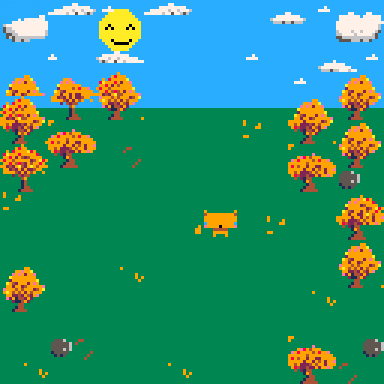

All of the artwork (aside from any of the Pico-8 assets) is made by me in the Pico-8 sprite editor tool. This tool has a limited colour palette and limited space to work in. You can see an example of this below.
Below you can see a screenshot of Foxy and her different poses.
Below you can see some of the background elements drawn in game, the blue sky, green grass and orange leaves are all drawn in real time. The leaves are random and will change with each playthrough.
Below is the gamescreen rendered before the words are draw to the screen. Each item is drawn individually. Starting with the grass, then sky, trees, sun and clouds, Foxy and after this the words will be drawn to screen. Obviously, when the game is running things happen a little differently to a static screenshot. The screen and every element is redrawn 60 times every second! This includes a frame where everything is green to make sure that there are no visual glitches!
In time I intend to update the visual elements of the game to fit the seasons. So these images will change, as will the background. Foxy will stay the same, although I may add new moves to her repertoire.